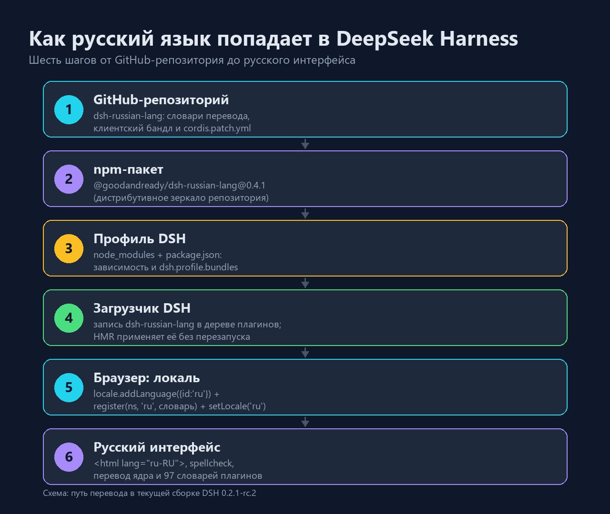
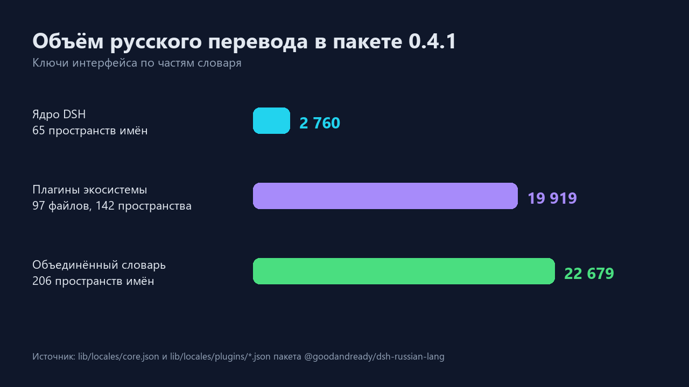

TL;DR. DeepSeek Harness (DSH) — англоязычный агентский харнесс. Русский интерфейс для него делает не команда DeepSeek, а сообщество: плагин @goodandready/dsh-russian-lang. Внутри — около 22 тысяч переведённых строк, собственный клиентский бандл и штатное API локализации DSH. Установка занимает несколько минут, перезапуск приложения не нужен, а откат делается удалением одной папки.
DeepSeek Harness — это рабочее место для ИИ-агента: чат, дерево файлов, терминал, планировщик задач, субагенты, трассировка вызовов инструментов. Всё это живёт в веб-интерфейсе, который десктопное приложение открывает в окне Electron, а тот же сервер можно открыть и в обычном браузере.
Ядро DSH изначально поддерживает два языка — английский и китайский. Переводить интерфейс на другие языки можно, но только «руками»: каждая подпись в интерфейсе — это ключ в словаре, и переводить нужно именно ключи, а не текст на экране.
На GitHub нашлось сразу несколько независимых попыток русификации:
| Репозиторий | Что внутри |
|---|---|
| GooDAnDReaDY/dsh-russian-lang | Полная локализация ядра и ~85 плагинов экосистемы, npm-пакет, типографика, инспектор перевода |
| AbsoluteMikhail/dsh-locale-ru | Полная русификация веб-интерфейса |
| nemezida1337/dsh-locale-russian | Языковой пакет и пайплайн перевода |
| Balla1ore/dsh-locale-ru | Строки веб-интерфейса и оболочки |
Я взял первый: он заявлен под DSH 0.2.1-rc.2 — ровно та версия, что стояла у меня, — и распространяется как обычный npm-пакет @goodandready/dsh-russian-lang@0.4.1.
Важно: это плагин, а не форк приложения. Он не патчит .exe, не ломает обновления и не требует правки файлов установки. Всё живёт в профиле пользователя.

DSH — приложение на Cordis: всё, включая интерфейс, собирается из плагинов. У плагина есть две половины:
lib/index.js) — выполняется в Node.js, здесь же объявляется схема настроек;lib/client.js) — обычный JS-файл, который браузер загружает как модуль @goodandready/dsh-russian-lang.Пакет объявляет в package.json два важных поля:
{
"dsh": {
"bundle": { "patch": "./cordis.patch.yml" },
"client": {
"platform": "web",
"inject": ["@deepseek-ai/dsh-client-locale",
"@deepseek-ai/dsh-client-ui-settings",
"@deepseek-ai/dsh-client-ui-slots"]
}
}
}bundle.patch — это фрагмент конфигурации, который добавляет запись плагина в дерево загрузчика. client — описание браузерной половины: какой модуль грузить и от каких плагинов она зависит.
А сам перевод регистрируется через штатное API локализации DSH (@deepseek-ai/dsh-client-locale):
// упрощённо, по мотивам lib/client.js
runtime.addLanguage({ id: 'ru', label: 'Русский', fallback: 'en' })
runtime.register('settings', 'ru', { /* словарь пространства имён */ })
runtime.setLocale('ru')Дальше t('settings.language') в любом плагине возвращает русскую строку — без перезагрузки страницы, потому что DSH перерисовывает подписи по событию смены локали.
flowchart LR
A["GitHub: dsh-russian-lang"] --> B["npm-пакет 0.4.1"]
B --> C["profiles/desktop/node_modules"]
C --> D["Загрузчик DSH<br/>entry dsh-russian-lang"]
D --> E["Клиентский модуль<br/>client.js"]
E --> F["locale.addLanguage + register"]
F --> G["Русский интерфейс"]
G -.->|"HMR, без перезапуска"| DОтдельно стоит заметить, как DSH доставляет клиентские модули: хост-половина сканирует включённые записи загрузчика, собирает «граф загрузки» и отдаёт бандлы по адресам вида /plugins/??…&rev=…. Страница получает этот граф по SSE (/plugins/events) и подхватывает новые плагины на лету.
Всё делалось на Windows, профиль desktop, DSH 0.2.1-rc.2.
1. Пакет в профиль. Распаковал дистрибутив в %USERPROFILE%\.dsh\profiles\desktop\node_modules\@goodandready\dsh-russian-lang.
2. Манифест профиля. В profiles\desktop\package.json добавил зависимость и — главное — бандл:
{
"dependencies": { "@goodandready/dsh-russian-lang": "0.4.1" },
"dsh": { "profile": { "bundles": [
"@deepseek-ai/dsh-base",
"@deepseek-ai/dsh-web-app",
"@goodandready/dsh-russian-lang"
] } }
}3. Выбор языка. В profiles\desktop\cordis.patch.yml — предпочтение локали:
- id: locale
name: "@deepseek-ai/dsh-client-locale"
config:
preference: ru4. Никакого перезапуска. У DSH включён HMR для конфигурации профиля: он перечитал слои патчей, поднял новую запись плагина, а открытая страница получила обновлённый граф модулей и загрузила client.js сама.
Проверять «на глаз» скучно, поэтому смотрел на факты:
| Проверка | Результат |
|---|---|
GET /api/dsh-russian-lang/dict/core | 200, JSON со словарём ядра, ~159 КБ |
GET /api/dsh-russian-lang/dict/all | 200, 65 пространств имён |
Граф клиентских модулей (/plugins/events) | содержит запись {"id":"@goodandready/dsh-russian-lang","url":"plugins/??@goodandready/dsh-russian-lang/client.js&rev=…"} |
| Отдача бандла | 200, 168 540 байт, внутри addLanguage, register(, ru-RU, spellcheck |
То есть хостовая половина поднялась, клиентский модуль попал в граф и отдаётся браузеру — остаётся открыть Настройки → Общие → Язык и убедиться, что выбран «Русский».
Плагин переводит не только ядро, но и десятки сторонних плагинов экосистемы — от канбан-досок до менеджера контекста.

| Часть словаря | Пространств имён | Ключей |
|---|---|---|
| Ядро DSH | 65 | 2 760 |
| Плагины экосистемы (97 файлов) | 142 | 19 919 |
| Объединённый словарь | 206 | 22 679 |
Плюс мелочи, которые заметны в работе: правильные формы множественного числа («1 файл», «2 файла», «5 файлов»), ёлочки-кавычки и длинные тире, исправление текста, набранного в неверной раскладке (Alt+L), инспектор перевода по Alt+Click и словарь <html lang="ru-RU"> для проверки орфографии браузером.
engines.dsh указан диапазон; при обновлении DSH плагин может потребовать обновления. Перед апдейтом харнесса проверяйте, что версия плагина поддерживает новую версию DSH.translateEngine: off): интерфейс русский, а ответы модели — на языке запроса. Включать Google Translate стоит осознанно: текст уйдёт третьей стороне.Если у вас DSH с npm-доступом, всё сводится к одной команде:
dsh plugin --profile desktop add @goodandready/dsh-russian-langДальше — Настройки → Общие → Язык → Русский и обновление страницы (Ctrl+R).
Если npm недоступен или хочется зафиксировать версию, работает и «ручной» путь из этой статьи: распаковать пакет в node_modules профиля, добавить его в dsh.profile.bundles и выставить preference: ru.
Удалить папку плагина из node_modules, убрать его из dependencies и dsh.profile.bundles, удалить блок id: locale из cordis.patch.yml. Резервные копии манифеста и патча стоит сделать заранее — я сохранял package.json.bak и cordis.patch.yml.bak и ни разу об этом не пожалел.
Русификация DSH — хороший пример того, как экосистема закрывает пробел быстрее вендора. Никакого взлома и патчинга бинарников: плагин пользуется теми же API, что и штатные языки, а весь перевод лежит в открытых JSON-словарях. Если вы работаете в DSH каждый день, русский интерфейс перестаёт быть косметикой — на нём просто меньше спотыкаешься.
Спасибо авторам dsh-russian-lang за словари и клиентский бандл — эта статья лишь рассказ о том, как они устроены и как их включить.